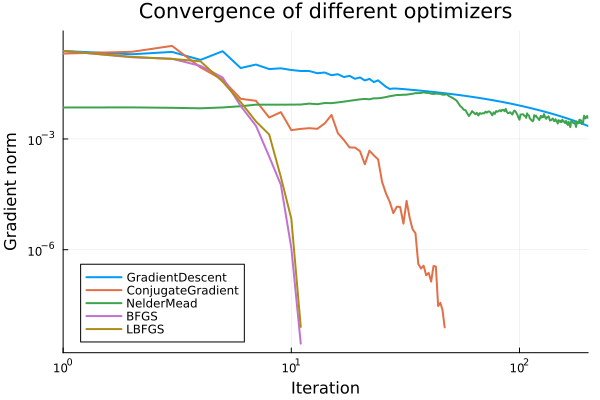

Optimization of the Map Coefficients
A crucial step in constructing transport maps is the optimization of the map coefficients, which determine how well the map represents the target distribution. This process can be approached in two distinct ways, depending on the available information about the target distribution [1].
Map-from-density
One way to construct a transport map is to directly optimize its parameters based on the (unnormalized) target density, as shown in Banana: Map from Density. This approach requires access to the target density function and uses quadrature schemes to approximate integrals, as introduced in Quadrature Methods.
Formally, we define the following optimization problem to determine the coefficients $\boldsymbol{a}$ of the parameterized map $T$:
\[\min_{\boldsymbol{a}} \sum_{i=1}^{N} w_{q,i}\Big[-\log\pi\bigl(T(\boldsymbol{a},\boldsymbol{z}_{q,i})\bigr)-\log |\det\nabla T(\boldsymbol{a},\boldsymbol{z}_{q,i}) |\Big]\]
As noted by [1], this optimization problem is generally non-convex. Specifically, it is only convex when the target density $\pi(\boldsymbol{x})$ is log-concave. Especially in Bayesian inference, where the target density represents the posterior density, the function is not log-concave, resulting in a non-convex optimization problem.
In this package, map optimization is performed with the help of Optim.jl, and support a wide range of optimizers and options (such as convergence criteria and printing preferences). Specifically, we can pass our optimize! function the desired optimizer and options. For a full overview of available options, see the Optim.jl configuration documentation.
To perform the optimization of the map coefficients, we call:
optimize!(M::PolynomialMap, target_density::Function, quadrature::AbstractQuadratureWeights;
optimizer::Optim.AbstractOptimizer = LBFGS(), options::Optim.Options = Optim.Options())We have to provide the polynomial map M, the target density function, and a quadrature scheme. Optionally, we can specify the optimizer (default is LBFGS()) and options.
As the starting point of the optimization, the map coefficients can be set using setcoefficients!(M, coeffs), where coeffs is a vector of coefficients.
Usage
First we load the packages:
using TransportMaps
using Optim
using Distributions
using PlotsThen, define the target density and quadrature scheme. Here, we use the same banana-shaped density as in Banana: Map from Density:
banana_density(x) = logpdf(Normal(), x[1]) + logpdf(Normal(), x[2] - x[1]^2)
target = MapTargetDensity(banana_density)
quadrature = GaussHermiteWeights(10, 2)Set optimization options to print the trace every 20 iterations:
opts_trace = Optim.Options(iterations=200, show_trace=true, show_every=20, store_trace=true) x_abstol = 0.0
x_reltol = 0.0
f_abstol = 0.0
f_reltol = 0.0
g_abstol = 1.0e-8
outer_x_abstol = 0.0
outer_x_reltol = 0.0
outer_f_abstol = 0.0
outer_f_reltol = 0.0
outer_g_abstol = 1.0e-8
f_calls_limit = 0
g_calls_limit = 0
h_calls_limit = 0
allow_f_increases = true
allow_outer_f_increases = true
successive_f_tol = 1
iterations = 200
outer_iterations = 1000
store_trace = true
trace_simplex = false
show_trace = true
extended_trace = false
show_warnings = true
show_every = 20
callback = nothing
time_limit = NaN
We will try the following optimizers from Optim.jl, ordered from simplest to most sophisticated:
Gradient Descent
The most basic optimization algorithm, Gradient Descent iteratively moves in the direction of the negative gradient. It is simple and robust, but can be slow to converge, especially for ill-conditioned problems.
M_gd = PolynomialMap(2, 2)
res_gd = optimize!(M_gd, target, quadrature; optimizer=GradientDescent(), options=opts_trace)
println(res_gd)Iter Function value Gradient norm
0 3.397609e+00 4.804530e-01
* time: 4.220008850097656e-5
20 2.846750e+00 3.244379e-02
* time: 0.9251270294189453
40 2.841985e+00 1.426403e-02
* time: 1.5243771076202393
60 2.840998e+00 1.066274e-02
* time: 2.12786602973938
80 2.840454e+00 8.088299e-03
* time: 2.7438080310821533
100 2.840145e+00 6.198896e-03
* time: 3.3535361289978027
120 2.839965e+00 4.786295e-03
* time: 3.966238021850586
140 2.839858e+00 3.715940e-03
* time: 4.562327146530151
160 2.839794e+00 2.896858e-03
* time: 5.148483037948608
180 2.839755e+00 2.265401e-03
* time: 5.7612810134887695
200 2.839731e+00 1.775845e-03
* time: 6.377130031585693
* Status: failure (reached maximum number of iterations)
* Candidate solution
Final objective value: 2.839731e+00
* Found with
Algorithm: Gradient Descent
* Convergence measures
|x - x'| = 3.70e-04 ≰ 0.0e+00
|x - x'|/|x'| = 1.52e-04 ≰ 0.0e+00
|f(x) - f(x')| = 9.28e-07 ≰ 0.0e+00
|f(x) - f(x')|/|f(x')| = 3.27e-07 ≰ 0.0e+00
|g(x)| = 1.78e-03 ≰ 1.0e-08
* Work counters
Seconds run: 6 (vs limit Inf)
Iterations: 200
f(x) calls: 681
∇f(x) calls: 681
∇f(x)ᵀv calls: 0Conjugate Gradient
Conjugate Gradient improves upon basic gradient descent by using conjugate directions, which can accelerate convergence for large-scale or quadratic problems. It requires gradient information but not the Hessian.
M_cg = PolynomialMap(2, 2)
res_cg = optimize!(M_cg, target, quadrature; optimizer=ConjugateGradient(), options=opts_trace)
println(res_cg)Iter Function value Gradient norm
0 3.397609e+00 4.804530e-01
* time: 4.1961669921875e-5
20 2.839693e+00 8.763686e-05
* time: 0.4553201198577881
40 2.839693e+00 2.084568e-07
* time: 0.6624801158905029
* Status: success
* Candidate solution
Final objective value: 2.839693e+00
* Found with
Algorithm: Conjugate Gradient
* Convergence measures
|x - x'| = 9.92e-09 ≰ 0.0e+00
|x - x'|/|x'| = 4.01e-09 ≰ 0.0e+00
|f(x) - f(x')| = 0.00e+00 ≤ 0.0e+00
|f(x) - f(x')|/|f(x')| = 0.00e+00 ≤ 0.0e+00
|g(x)| = 1.40e-08 ≰ 1.0e-08
* Work counters
Seconds run: 1 (vs limit Inf)
Iterations: 59
f(x) calls: 141
∇f(x) calls: 84
∇f(x)ᵀv calls: 0Nelder-Mead
Nelder-Mead is a derivative-free optimizer that uses a simplex of points to search for the minimum. It is useful when gradients are unavailable or unreliable, but may be less efficient for high-dimensional or smooth problems.
M_nm = PolynomialMap(2, 2)
res_nm = optimize!(M_nm, target, quadrature; optimizer=NelderMead(), options=opts_trace)
println(res_nm)Iter Function value √(Σ(yᵢ-ȳ)²)/n
------ -------------- --------------
0 3.385910e+00 6.623032e-03
* time: 5.3882598876953125e-5
20 3.325296e+00 1.183941e-02
* time: 0.05847597122192383
40 3.217172e+00 1.770408e-02
* time: 0.11845803260803223
60 3.145470e+00 4.181887e-03
* time: 0.1972208023071289
80 3.117131e+00 5.446265e-03
* time: 0.2381749153137207
100 3.093431e+00 3.313369e-03
* time: 0.2932429313659668
120 3.069929e+00 3.715059e-03
* time: 0.3255949020385742
140 3.051885e+00 3.568445e-03
* time: 0.3717210292816162
160 3.040074e+00 2.744730e-03
* time: 0.41947388648986816
180 3.030321e+00 2.994942e-03
* time: 0.46205687522888184
200 3.014241e+00 3.253376e-03
* time: 0.49709582328796387
* Status: failure (reached maximum number of iterations)
* Candidate solution
Final objective value: 3.008308e+00
* Found with
Algorithm: Nelder-Mead
* Convergence measures
√(Σ(yᵢ-ȳ)²)/n ≰ 1.0e-08
* Work counters
Seconds run: 0 (vs limit Inf)
Iterations: 200
f(x) calls: 304BFGS
BFGS is a quasi-Newton method that builds up an approximation to the Hessian matrix using gradient evaluations. It is generally faster and more robust than gradient descent and conjugate gradient for smooth problems.
M_bfgs = PolynomialMap(2, 2)
res_bfgs = optimize!(M_bfgs, target, quadrature; optimizer=BFGS(), options=opts_trace)
println(res_bfgs)Iter Function value Gradient norm
0 3.397609e+00 4.804530e-01
* time: 4.291534423828125e-5
* Status: success
* Candidate solution
Final objective value: 2.839693e+00
* Found with
Algorithm: BFGS
* Convergence measures
|x - x'| = 8.52e-09 ≰ 0.0e+00
|x - x'|/|x'| = 3.45e-09 ≰ 0.0e+00
|f(x) - f(x')| = 4.44e-16 ≰ 0.0e+00
|f(x) - f(x')|/|f(x')| = 1.56e-16 ≰ 0.0e+00
|g(x)| = 3.25e-10 ≤ 1.0e-08
* Work counters
Seconds run: 0 (vs limit Inf)
Iterations: 12
f(x) calls: 45
∇f(x) calls: 45
∇f(x)ᵀv calls: 0LBFGS
LBFGS is a limited-memory version of BFGS, making it suitable for large-scale problems where storing the full Hessian approximation is impractical. It is the default optimizer in many scientific computing packages due to its efficiency and reliability.
M_lbfgs = PolynomialMap(2, 2)
res_lbfgs = optimize!(M_lbfgs, target, quadrature; optimizer=LBFGS(), options=opts_trace)
println(res_lbfgs)Iter Function value Gradient norm
0 3.397609e+00 4.804530e-01
* time: 3.0040740966796875e-5
* Status: success
* Candidate solution
Final objective value: 2.839693e+00
* Found with
Algorithm: L-BFGS
* Convergence measures
|x - x'| = 1.25e-08 ≰ 0.0e+00
|x - x'|/|x'| = 5.04e-09 ≰ 0.0e+00
|f(x) - f(x')| = 1.33e-15 ≰ 0.0e+00
|f(x) - f(x')|/|f(x')| = 4.69e-16 ≰ 0.0e+00
|g(x)| = 2.84e-09 ≤ 1.0e-08
* Work counters
Seconds run: 0 (vs limit Inf)
Iterations: 12
f(x) calls: 45
∇f(x) calls: 45
∇f(x)ᵀv calls: 0Finally, we can compare the results by means of variance diagnostic:
samples_z = randn(1000, 2)
v_gd = variance_diagnostic(M_gd, target, samples_z)
v_cg = variance_diagnostic(M_cg, target, samples_z)
v_nm = variance_diagnostic(M_nm, target, samples_z)
v_bfgs = variance_diagnostic(M_bfgs, target, samples_z)
v_lbfgs = variance_diagnostic(M_lbfgs, target, samples_z)
println("Variance diagnostic GradientDescent: ", v_gd)
println("Variance diagnostic ConjugateGradient: ", v_cg)
println("Variance diagnostic NelderMead: ", v_nm)
println("Variance diagnostic BFGS: ", v_bfgs)
println("Variance diagnostic LBFGS: ", v_lbfgs)Variance diagnostic GradientDescent: 0.0004373121237130718
Variance diagnostic ConjugateGradient: 0.0003790237201569168
Variance diagnostic NelderMead: 0.10626452172420726
Variance diagnostic BFGS: 0.0003790236351507774
Variance diagnostic LBFGS: 0.0003790236432620713We can visualize the convergence of all optimizers:
plot([res_gd.trace[i].iteration for i in 1:length(res_gd.trace)], lw=2,
[res_gd.trace[i].g_norm for i in 1:length(res_gd.trace)], label="GradientDescent")
plot!([res_cg.trace[i].iteration for i in 1:length(res_cg.trace)], lw=2,
[res_cg.trace[i].g_norm for i in 1:length(res_cg.trace)], label="ConjugateGradient")
plot!([res_nm.trace[i].iteration for i in 1:length(res_nm.trace)], lw=2,
[res_nm.trace[i].g_norm for i in 1:length(res_nm.trace)], label="NelderMead")
plot!([res_bfgs.trace[i].iteration for i in 1:length(res_bfgs.trace)], lw=2,
[res_bfgs.trace[i].g_norm for i in 1:length(res_bfgs.trace)], label="BFGS")
plot!([res_lbfgs.trace[i].iteration for i in 1:length(res_lbfgs.trace)], lw=2,
[res_lbfgs.trace[i].g_norm for i in 1:length(res_lbfgs.trace)], label="LBFGS")
plot!(xaxis=:log, yaxis=:log, xlabel="Iteration", ylabel="Gradient norm",
title="Convergence of different optimizers", xlims=(1, 200),
legend=:bottomleft)
It becomes clear, that LBFGS and BFGS are the most efficient optimizers in this case, while Nelder-Mead struggles to keep up.
Map-from-samples
Another strategy of constructing a transport map is to use samples of the target density, as seen in Banana: Map from Samples. The formulation of transport map estimation in this way has the benefit to transform the problem into a convex optimization problem, when reference density is log-concave [1]. Since we can choose the reference density, we can leverage this property to simplify the optimization process.
When the map is constructed from samples, the optimization problem is formulated by minimizing the Kullback-Leibler divergence between the pushforward of the reference density and the empirical distribution of the samples. We denote the transport map by $S$, which pushes forward the target distribution to the reference distribution. This leads to the following optimization problem:
\[\min_{\boldsymbol{a}} -\frac{1}{M} \sum_{i=1}^{M} \log \rho\left(S(\boldsymbol{a}, \boldsymbol{x}_i)\right) - \log \left|\det \nabla S(\boldsymbol{a}, \boldsymbol{x}_i)\right|\]
where $\{\boldsymbol{x}_i\}_{i=1}^M$ are samples from the target distribution, and $\rho(\cdot)$ is the density of the reference distribution.
To perform the optimization, we can use the same optimize! function as before, but now we pass samples instead of a target density and quadrature scheme. Similarly, we can specify the optimizer and options:
optimize!(M::PolynomialMap, samples::AbstractArray{<:Real};
optimizer::Optim.AbstractOptimizer = LBFGS(), options::Optim.Options = Optim.Options())This page was generated using Literate.jl.